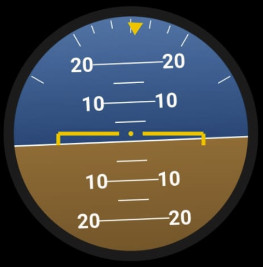
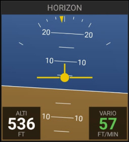

🛩
Horizon artificiel
Assiette (tangage + roulis) via capteurs
ANLHRZ · analogique
NUMHRZ · numérique (50%-2L, double hauteur)


Possibilités
- Affiche l'assiette : tangage + roulis via les capteurs.
- NUMHRZ montre l'horizon simplifié + arc d'inclinaison en haut + Alti (gauche) et Vario (droite).
Gestes
– Appui long : —
·· Double-tap : —
Note
- Se recale via la boussole de l'entête.
- Gyroscope requis : sur un appareil sans capteur d'orientation (gyroscope / magnétomètre), l'horizon, le conservateur de cap et la bille affichent « Instrument indisponible ». Un test de compatibilité au démarrage vous en informe.